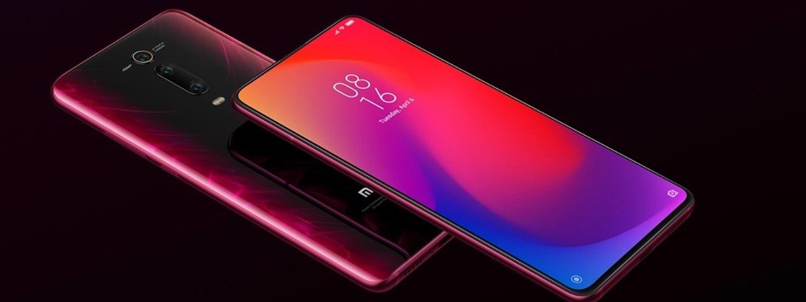
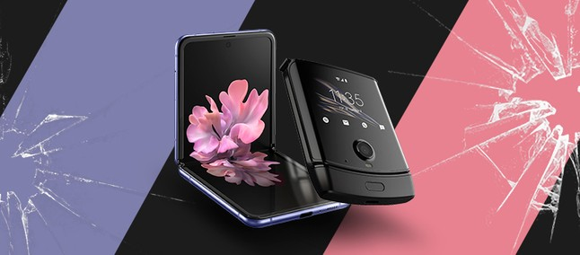
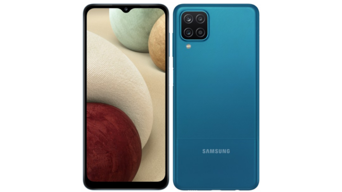

Esta pagina tem como objetivo mostrar alguns smartphones lançados durante este ultimo simestre, demostração basica de suas caracteristicas, datas de lançamento e imagens dos mesmos.
O Xiaomi Mi 11 é um smartphone Android de bom nível, ótimo para fotos, que pode satisfazer até o mais exigente dos usuários. Tem uma enorme tela Touchscreen de 6.81 polegadas e uma resolução de 3200x1440 pixels que é uma das mais altas atualmente em circulação.
Mais um modelo na lista de celulares com lançamento em 2021 é a segunda geração de celulares dobráveis da Motorola, o Razr 2.Com isso, poderemos ver um avanço em termos de celular com a tela dobrável. Mas é bem provável que pouca coisa mude em relação ao primeiro modelo.
O Samsung Galaxy A12 foi lançado dia 15 de Janeiro e chegou com o chipset MediaTek Helio P35, GPU PowerVR GE8320, memória RAM de 4 GB, armazenamento interno de 64 GB e bateria de 5000mAh.
